Part 3 – Time Series Trends & Insights
Visualizing time series trends and extracting insights using filters and named ranges.
Using the same methods in the previous sections in Exploratory Analysis & KPI Overview and Lookup & Reference Techniques, we’ll finish up organizing the data based on campaign_name and c_date.
Functions:
- text
- weekday
Chart Setup
Remember to freeze top rows so that they stay in place when dragging data.

It’s helpful to add a Day of Week (DOW) column to identify Mondays, Tuesdays, etc., to better analyze performance between weekdays and weekends.
Get numbers that represent weekdays from the WEEKDAY function. By default, Sunday is 1 and Saturday is 7, but this can be customized using the second argument.
Then, pass the results to TEXT function to get text values like "Monday" or "Mon". TEXT takes two arguments: target value and format. Common formats for dates are "dddd" (e.g., Monday) and "ddd" (e.g., Mon).

We can see that there is no significant difference between weekdays and weekends performance. Fridays and Saturdays account for the most orders.
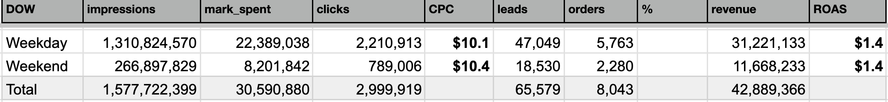 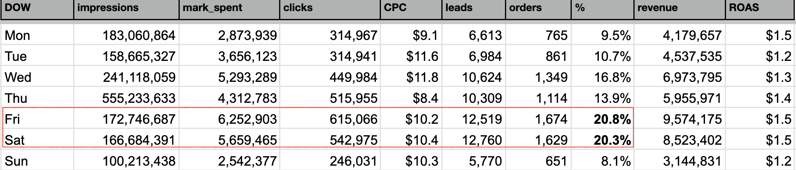Let’s visualize daily performance trends using Combo Charts. Create three charts:
- Clicks (bar) + CPC (line)
- Impressions (bar) + CTR (line)
- Marketing Spend (bar) + ROAS (line)
Start with Clicks + CPC. Go to Insert → Chart, select Combo Chart in the Chart Editor. Set the Data Range to include c_date (A), clicks (E), and CPC (G).
Add c_date to X-axis, and both clicks and CPC to Series. Then go to Customize → Series and set CPC to the right axis.
Observations:
Clicks and spending peaked around mid-month (Feb 10–20). On Feb 18, impressions spiked but spend decreased. This could be due to ad budget being focused around Lunar New Year (Feb 12–16, 2021).
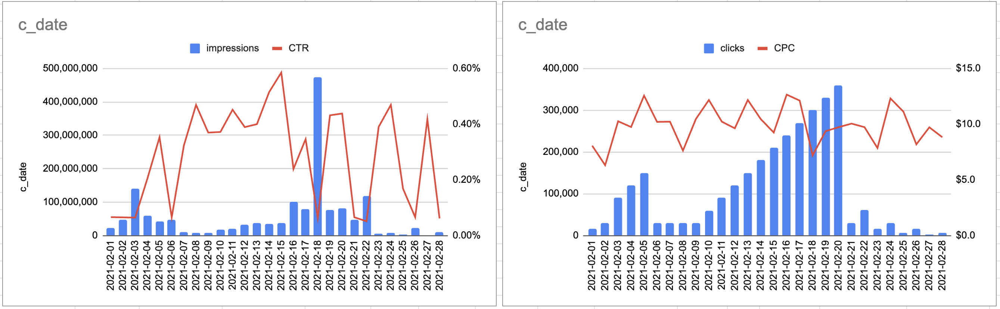 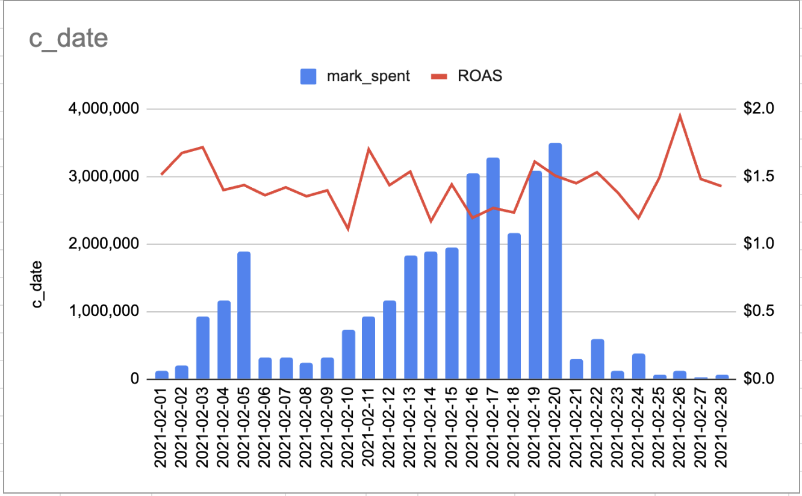Using a pivot table to check traffic sources, we find the ad campaign behind the Feb 18 spike in impressions was banner_partner.
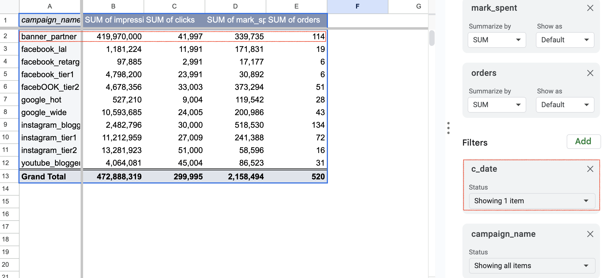Other metrics like clicks, spend, and orders did not increase significantly on the same day. It’s possible that orders, not impressions, are the basis of cost. We also notice that order volumn peaked after 2 days after impressions spiked.
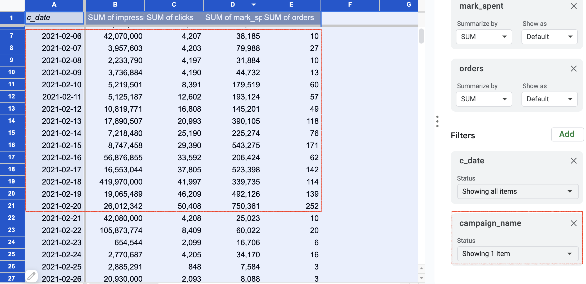Sorting Issues with Formula Columns
Columns generated by formulas cannot be sorted directly, making category- or platform-based analysis harder. Two solutions:
- Named Ranges
- Filter (views or functions)
Named Ranges
Select campaign data (excluding header) and name the range campaign_performance.
In a new sheet, enter the following formula in cell A2:
=sort(campaign_performance,3,FALSE,2,TRUE,6,FALSE)SORT function documentation 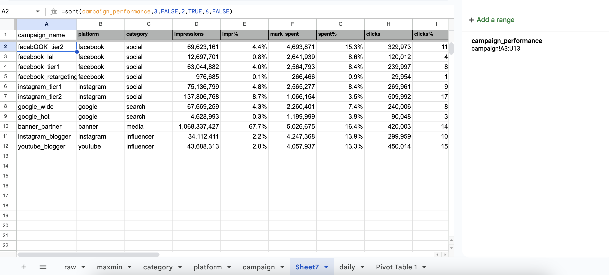
Observations:
- Most leads and orders came from influencer and social channels.
- Highest average order value: influencer
- Media provided the most impressions
- Top performers (increase budget if possible): instagram_blogger, youtube_blogger
- Low ROAS (need optimization) ($0.1): facebook_lal
In search, both google_hot and google_wide have similar CPA but very different order values, hinting at differences in creatives or copy. Further analysis is needed.
Filter
Two common ways to filter by category or platform:
1. Filter View
Create a filter view and set the sort order for the desired column.
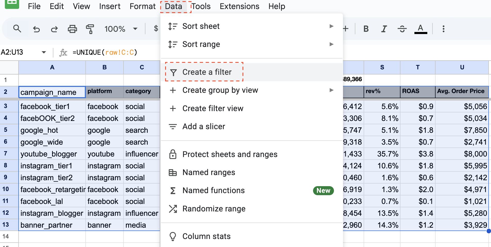 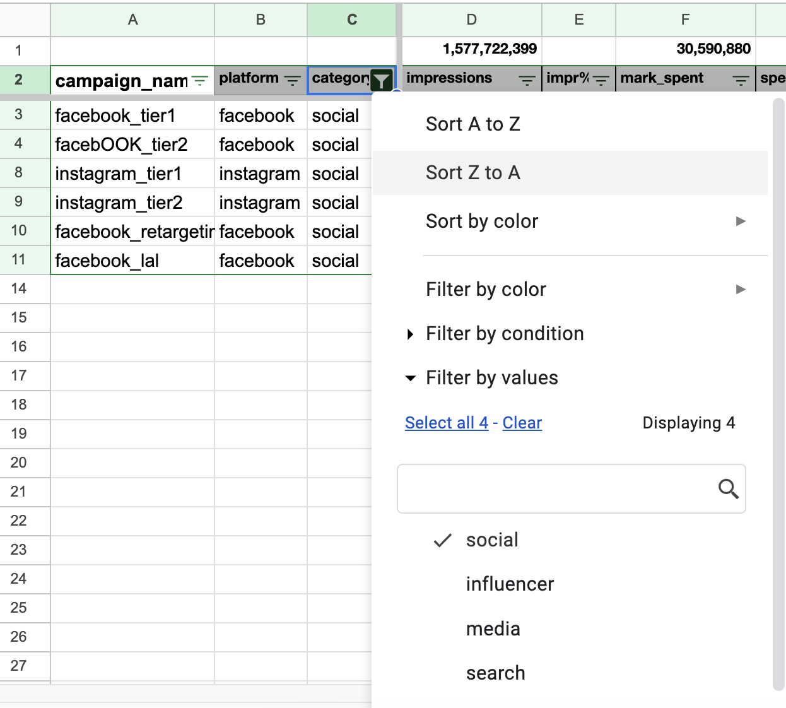2. FILTER Function
Call the filter function, select the data range (A3:U13) and set the filter condition.
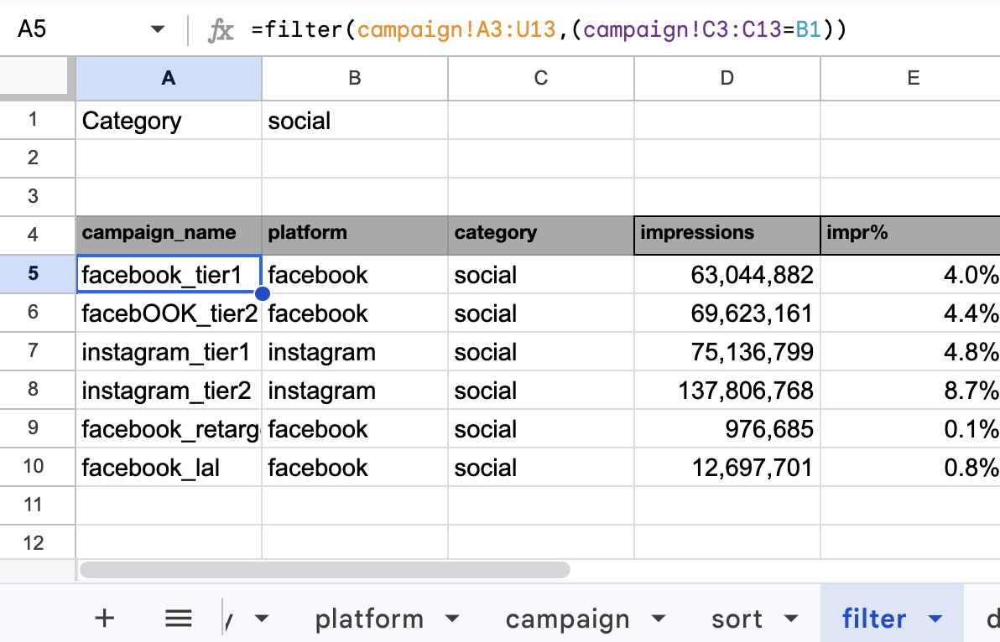 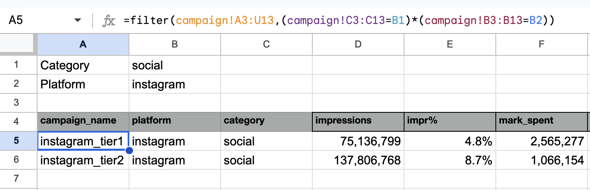 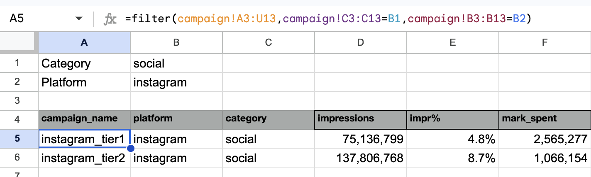Refer to the following resources for more information:
Summary
We used the following features and functions in this series:
- Charts & Pivot Tables
- Text Processing:
left,mid,right,lower,find,unique,text - Date & Numbers:
max,min,weekday - Conditional Calculations:
sum,sumif,count,countif - Reference/Matching:
vlookup,indirect,index+match
The process starts with organizing data, follows by conditional calculations, and ends with campaign performance evaluation — a solid foundation for descriptive data analysis. Similar steps can be applied to other datasets.